4.1 Molecule representation
In order to represent a molecule in the same way, independently from the original representation, alvaDesc performs the following standardisation steps on molecular structures:
alvaDesc standardisation is performed in order to get the same internal molecular representation, and consequently the same descriptor values, independently from the original representation. i.e., the same molecule represented in a Kekulé or aromatic form will be internally represented as the same molecule.
Nitro group standardisation
The nitro group is always standardised as a nitrogen atom connected to two oxygen atoms by two double bonds, independently from the original representation.
| Original representation | Standardised representation |
|---|---|
| 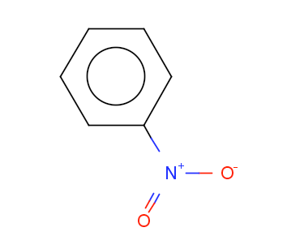 | 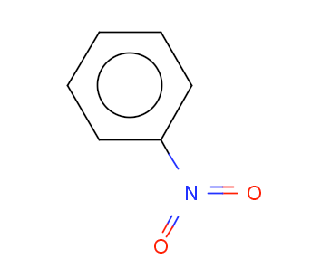 |
| 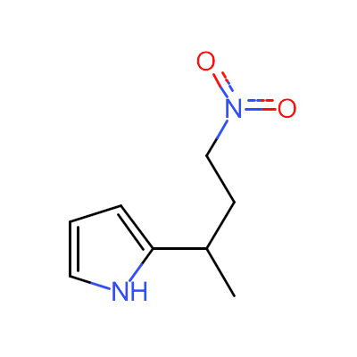 |  |
Aromatization
alvaDesc automatically detects molecule aromaticity, independently from the original representation. Aromatic structures, even if they are represented in Kekulé form, are converted to an aromatic representation, replacing single and double bonds belonging to aromatic cycles to aromatic bonds.
Aromaticity is identified considering all rings in the molecule. Planar rings fulfilling the Hückel’s rule (i.e., rings having (4N + 2) number of π electrons where N is zero or any positive integer) are considered aromatic and all the bonds involved in the ring are converted into aromatic bonds.
| Original representation | Standardised representation |
|---|---|
| 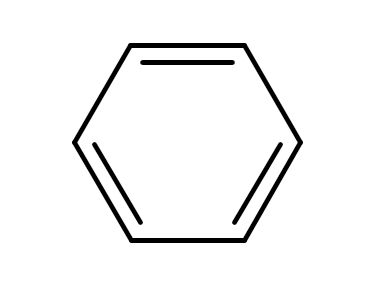 | 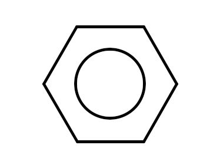 |
| 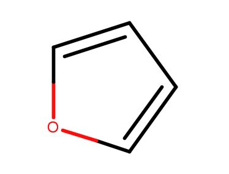 | 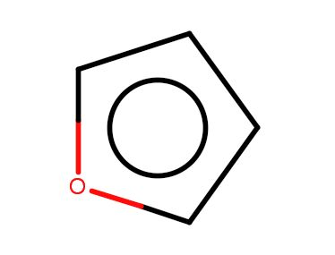 |
| 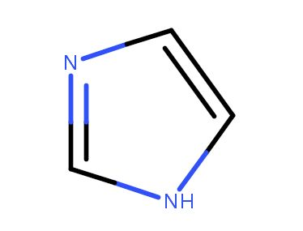 | 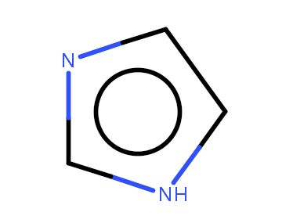 |
| 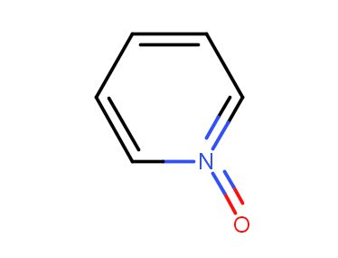 | 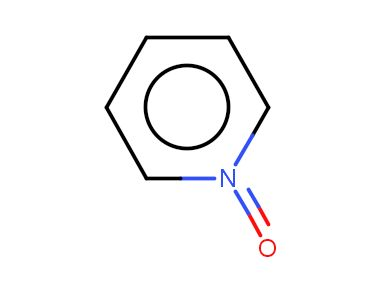 |
| 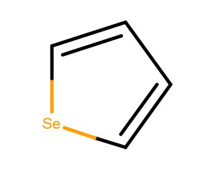 | 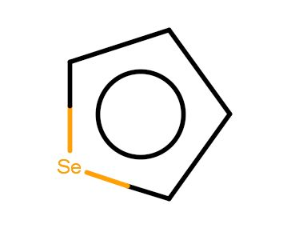 |
| 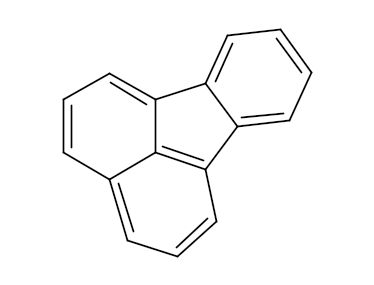 | 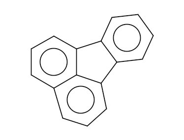 |
![C=1C=C[Se]C1](../images/std_not_arom.jpg?classes=border "Not aromatic structures")
Implicit hydrogens
Molecular structure can include hydrogen atoms implicitly, explicitly or both.
The number of implicit hydrogens is calculated starting from the valence of the atom and the file format. Different file formats have different valence models. For the SMILES file format the implicit hydrogens count is equal to the valence of the atom minus the total bond order of that atom, and it is calculated considering the lowest normal valences of the atoms:
| Atom type | Normal valences |
|---|---|
| Boron | 3 |
| Carbon | 4 |
| Nitrogen | 3, 5 |
| Potassium | 3, 5 |
| Arsenic | 3, 5 |
| Oxygen | 2 |
| Sulphur | 2, 4, 6 |
| Selenium | 2, 4, 6 |
| Fluorine | 1 |
| Chlorine | 1 |
| Bromine | 1 |
| Iodine | 1 |
| Astatine | 1 |
alvaDesc automatically adds implicit hydrogens to molecules provided as SMILES, MDL and Tripos Mol2 file formats